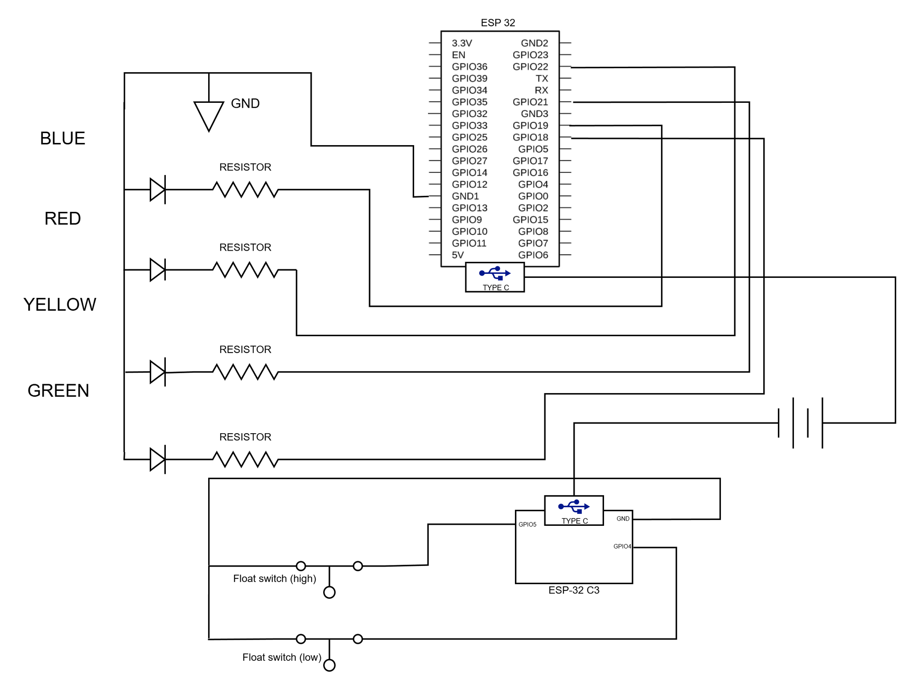
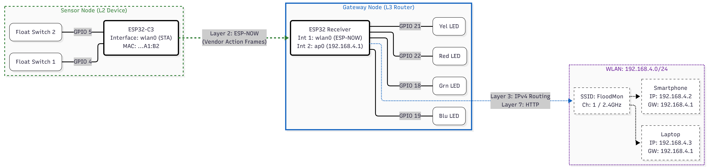
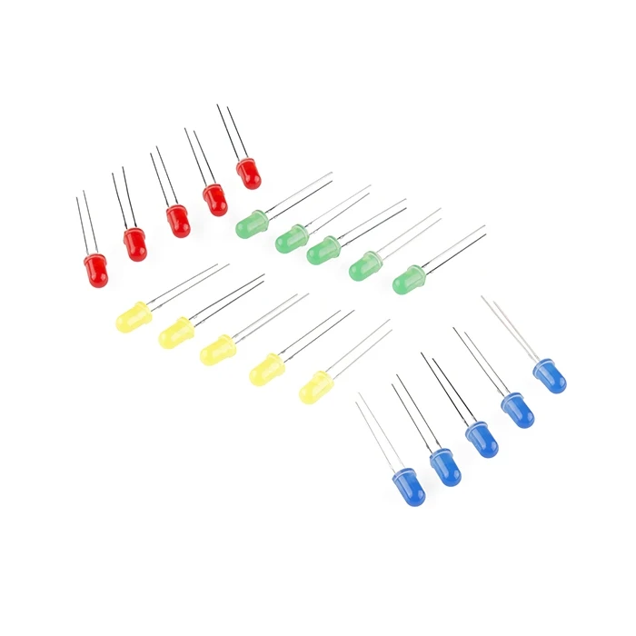
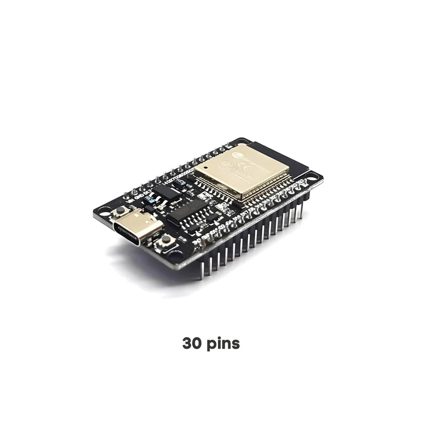
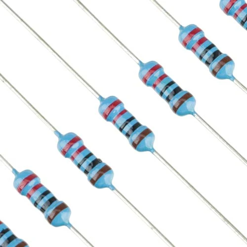
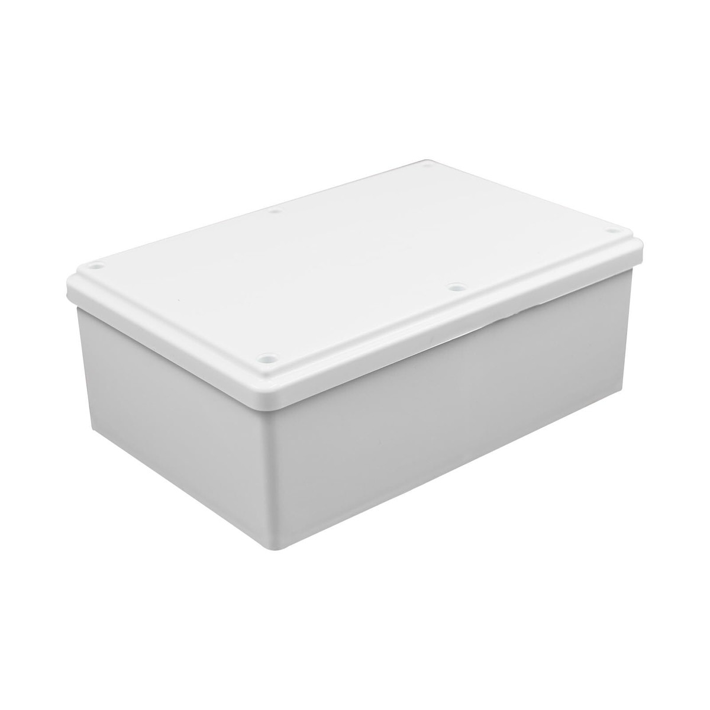
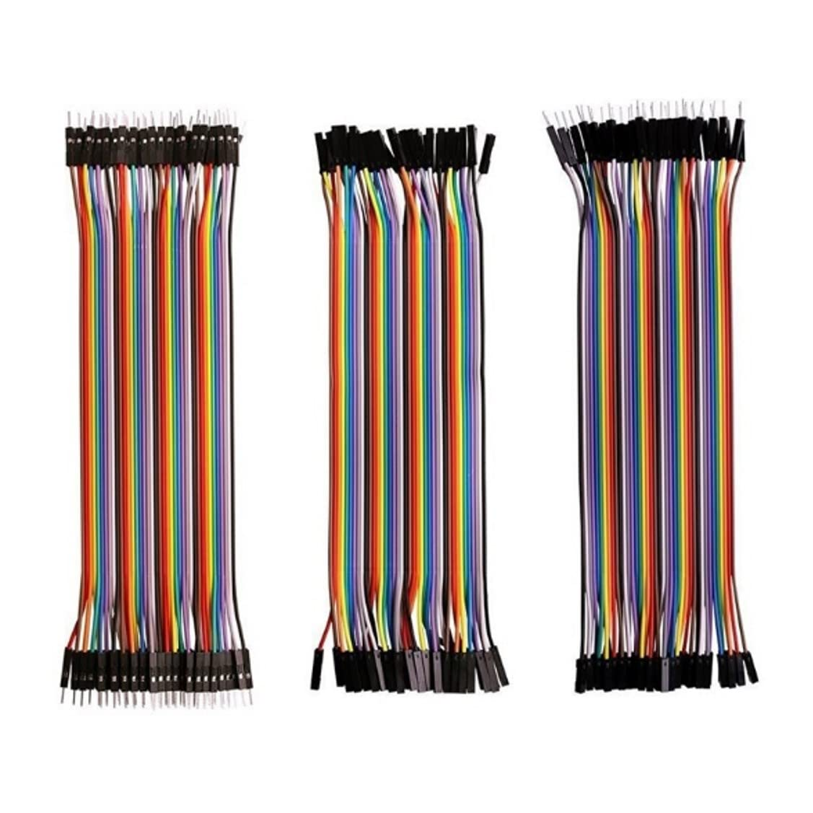

IoT Flood Monitoring System
A dual-unit ESP32 project for real-time water level detection and remote alerting.
Project Overview
This project is a real-world IoT solution designed to address the recurring natural flooding at the Pablo Borbon campus. Due to the area's low-lying geography, certain roads become impassable during heavy rain, posing a risk to drivers. This system provides a clear, automated warning sign to indicate whether the road is safe to traverse.
The system uses a remote Slave Unit placed at a critical low point. This unit employs two float switches to detect rising water levels. When a water level threshold is breached, it wirelessly signals a central Master Unit using the ESP-NOW protocol.
The Master Unit controls a highly visible traffic light, giving drivers an immediate and easy-to-understand status of the road ahead. A green light indicates the road is clear, yellow suggests caution as water is rising, and a solid red light warns that the road is impassable. This provides a practical safety measure for a persistent, real-life environmental challenge.
How It Works
State 1: Normal Conditions
When both float switches are dry, the system is in its NORMAL state. The Master Unit keeps a standard traffic light cycling (Green -> Yellow -> Red) to regulate normal traffic flow, and the blue flood indicator LED remains off.
State 2: Low-Level Flood
When the lower float switch is triggered by rising water, the system enters the FLOOD_LOW state. The traffic light turns to a 'breathing' or pulsing yellow, signaling to drivers that the road is wet and they should proceed with caution. The blue indicator LED also turns on.
State 3: High-Level Flood
When both the lower and upper float switches are triggered, the system enters the FLOOD_HIGH state, indicating the road is impassable. The traffic light turns to a solid red, and the blue indicator LED stays on, clearly warning drivers not to proceed.
Web Dashboard & Manual Control
The Master Unit also hosts a password-protected Wi-Fi Access Point. By connecting to this network, authorized users can view a web dashboard showing the current flood status in real-time. The dashboard also provides manual control over the LEDs, allowing for system resets or tests.
Installation & Setup Guide
1. Software Prerequisites
- Install the Arduino IDE.
- Add ESP32 board support to your Arduino IDE. You can find instructions here. Make sure to include support for both standard ESP32 and ESP32-C3 boards.
2. Configure & Flash the Firmware
For the Master Unit (ESP32):
- First, use the `firmware/MAC_Address_Finder.ino` sketch to get the MAC Address of your ESP32 board. Upload the sketch and copy the MAC address from the Serial Monitor.
- Open `firmware/Traffic_Master.ino` and select your ESP32 board in the Arduino IDE.
- Update the `www_user` and `www_pass` variables if you want to change the web dashboard login credentials.
- Upload the `Traffic_Master.ino` sketch to your ESP32 board.
For the Slave Unit (ESP32-C3):
- Open `firmware/Float_Sensor.ino`.
- Paste the Master's MAC address you copied earlier into the `broadcastAddress[]` array within this file.
- Select your ESP32-C3 board from the board manager.
- Upload the sketch to your ESP32-C3 board.
3. Final Assembly & Power On
- Connect the float switches, LEDs, and resistors to the boards as shown in the Schematic diagram.
- Power on both units. The Master will create a Wi-Fi Access Point named "IoT_Flood_Monitor_AP".
- You can connect to this Wi-Fi network to access the web dashboard and monitor the system.
Usage Guide
Interpreting the Light Signals
- GREEN LIGHT: Normal traffic flow. The road is clear and safe to pass.
- PULSING YELLOW LIGHT: Low-level flood detected. Proceed with caution as the road is wet.
- SOLID RED LIGHT: High-level flood detected. The road is impassable. Do not proceed.
- BLUE LIGHT: This is a general flood indicator. It will be ON during both Low and High-level flood states.
Accessing the Web Dashboard
- On your phone or computer, scan for Wi-Fi networks.
- Connect to the network named "IoT_Flood_Monitor_AP".
- Use the password: "floodmon" (or the password you configured).
- Once connected, open a web browser. You should be automatically redirected to the login page. If not, navigate to the device's IP address (usually 192.168.4.1).
- Log in with the configured username and password (default is `admin`/`password`).
Using the Dashboard Controls
The web dashboard allows for manual control and system resets. You can turn individual LEDs on or off for testing, force the system back into its automatic traffic light cycle, or perform a full reset to the NORMAL state.
Documentation & Process
System Assembly & Master Hub
The build process involves wiring the float switches to the Slave Unit and the LED indicators to the Master Unit. Both units are housed in protective casings to shield them from environmental factors. The Master Unit is the core of the system, featuring visual alerts and network capabilities. It's configured to run a local Wi-Fi access point, allowing for a direct connection to its web dashboard without needing an external router.


Diagrams
Circuit Diagram
This schematic illustrates the physical connections for both the Master and Slave units, including GPIO pins for all LEDs and float switches.
Network Topology
High-level view of ESP-NOW from Slave to Master, plus the Master’s SoftAP and dashboard clients.
ESP32 Pinout (Master)
Reference pinout for the ESP32 Master controlling LEDs and hosting the web dashboard. LEDs: GPIO 22 (Red), 21 (Yellow), 18 (Green), 19 (Blue).

ESP32-C3 Pinout (Slave)
Reference pinout for the ESP32-C3 Slave reading float switches on GPIO 4 (low) and GPIO 5 (high) with INPUT_PULLUP.

Demo Video
Quick walkthrough of the Master/Slave units, traffic lights, and dashboard in action.
Bill of Materials
| Component | Quantity | Key Specifications | Package Type |
|---|---|---|---|
| ESP32-C3 Dev Module | 1 | 3.3V Logic, WiFi/BT | - |
| ESP32 Dev Module | 1 | 3.3V Logic, WiFi/BT | - |
| Float Switch | 2 | Water Level Sensor | - |
| 5mm Red LED | 1 | ~2.0V, 20mA | Through-hole |
| 5mm Yellow LED | 1 | ~2.1V, 20mA | Through-hole |
| 5mm Green LED | 1 | ~2.2V, 20mA | Through-hole |
| 5mm Blue LED | 1 | ~3.2V, 20mA | Through-hole |
| 220Ω Resistor | 4 | For current limiting LEDs | Axial |
| USB Type-C Cable | 2 | For Power & Programming | - |
| Waterproof Junction Box | 1 | To house sensor unit | - |
| Jumper Wires | Assorted | For connections | - |
Component Photos
LEDs

ESP32-C3
(Slave Unit)

ESP32
(Master Unit)

Float
Switch

220Ω
Resistors

USB Type-C Cables

Waterproof Junction Box
Jumper
Wires

Libraries Used
esp_now.h
Utilized for reliable and fast peer-to-peer communication between the ESP32 Slave and Master units without the overhead of a traditional Wi-Fi connection.
WiFi.h
Enables the ESP32 boards to manage Wi-Fi connections. It is used by the Slave Unit to connect to the Master’s SoftAP and by the Master Unit to create that access point.
WebServer.h
Used by the Master Unit to create a lightweight, secure web server. This server hosts a dashboard for monitoring flood status and provides control endpoints.
Firmware & Codebase
Slave Unit Firmware
ESP32-C3 sketch for reading the float switches and sending status updates via ESP-NOW.
Float_Sensor.inoMaster Unit Firmware
ESP32 sketch that receives sensor data, drives the LEDs, and hosts the web dashboard.
Traffic_Receiver.inoMAC Address Finder
Utility to read the MAC address of any ESP board for ESP-NOW pairing.
MAC_Address_Finder.inoFuture Improvements
Cloud Integration & Mobile Alerts
Connect the Master Unit to a home Wi-Fi network to push status updates to an IoT cloud platform. This would enable sending real-time mobile notifications (SMS, Push) to users, ensuring they are alerted to flood conditions even when away from the physical location.
Solar-Powered Slave Unit
To increase the autonomy and placement flexibility of the remote Slave Unit, it could be equipped with a small solar panel and a rechargeable battery pack. This would make it ideal for long-term deployment in outdoor or remote locations without access to mains power.
Advanced Sensing & Data Logging
Upgrade the binary float switches to an ultrasonic or ToF (Time-of-Flight) distance sensor. This would provide continuous, granular data on the water level, not just discrete high/low points. This data could be logged to an SD card or the cloud for historical analysis of flood patterns.